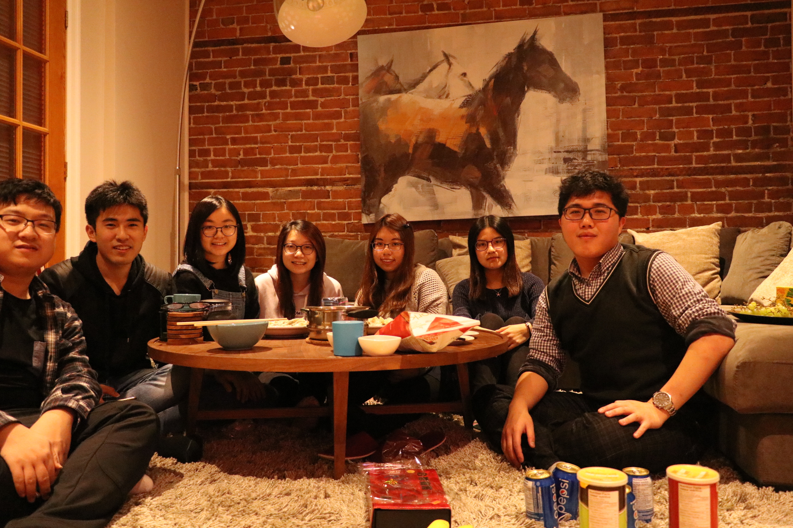
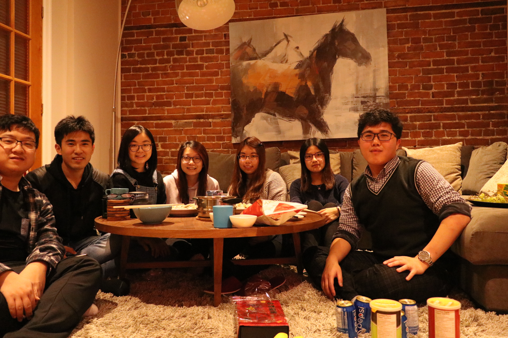

The First and Last time in my life:
Being an exchange student
October 3, 2017

29 December 2016, this is the time when my life changed ever. It is because I finally took a plane departing from Hong Kong and heading to Montreal, Canada, where I spent 5 months living there as an exchange student. I was extremely looking forward to immersing in the foreign culture there and experiencing the brand-new study life at McGill University. I couldn’t wait to meet people with different background, learn what I didn’t know with eminent professors, and start my adventure. This exchange tour encourages me consistently pursue my future goals and provides me fresh mind about study and life. And most importantly, this short exchange life became my unforgettable and happiest memory in my life.
Laughter, sweets, snow-covered grassland and Frisbee all worked together to create the extra-curricular delightfulness at McGill. The squirrels and students harmoniously stay on the same campus. People can easily communicate with others they even don't know. The Medieval architectures scatter as every pearl in this city and concert is held on every day. Montreal is famous for its arts and international film festivals were held in this city every year. People were always immersed in the romantic and artistic atmosphere. I love appreciating every street graffiti and amazing snow view of this city. I love exploring every art gallery and museum to broaden my horizon and enhance my aesthetic interest.

I also took this exchanging out an opportunity to travel to other places. I together with my friends went to the Quebec City, had a road trip adventure in Banff National Park, and also traveled many cities in the US. I tasted different awesome foods, knowing many interesting persons, and experienced various cultures. I invented many friends to come to my apartment on Lunar New Year and we together cooked many foods and made dumplings by ourselves. We rent a car and drove in the Banff to appreciate every beautiful moment of this national park. There were many first-time created during the trip. I first time ice-skating on the frozen surface of Lake Louise which gave me a feeling of nature and quite. I first time skiing on the Rocky Mountain at MT. Norquay Ski Resort. I thought skiing should be easy before I really stand on the snowboard and the facts turn out I was totally wrong. But it was quite challenging and fun, and it gave me a sense of accomplishment after I can successfully ski down the hill. We took a boat on the Niagara Falls and felt the wind and water droplets hit in the face. We saw the whales for the first time of life on the Atlantic Ocean in Boston. We stood on the top of the Empire State Building viewing the awesome Manhattan and watched the charming sunset view of the Golden Gate Bridge. These memories make me appreciate how fun the life is and how much beauty the world has. These experiences remind me to keep a positive and outgoing mind to explore more about the world.
 



I appreciated the new insights it brought me when I was studying at McGill University as an Electrical and Computer Science engineering student. Studying at McGill University was always intriguing, informative and challenging. Increasingly sophisticated knowledge, explosive information and complicated project all work together to make studying at McGill more challenging than studying in PolyU. Professors who taught the courses that I took are all eminent among their area in the world. What surprised me most is that once students had a question, they immediately raised their hands, spoken out, and discussed with the professor. They did not afraid whether the question is stupid or not and everyone was willing to discuss the questions with their neighbor who they even don’t know. I really enjoy immersing in the interactive teaching atmosphere and love the harmonious relationship between the students and professors. Although I felt kind of challenging when I was dealing with massive assignments and projects, I indeed learned lots of valuable academic knowledge from those subjects.
One of the courses that I took in McGill University was ECSE425 - Computer Organization and Architecture. Professor not only taught students the academic knowledge but also required students to finish a group project that design and implement a pipelined processor. Other students in this course are indeed excellent in hardware and they have a good foundation of computer organization. Most of them are ready to graduate and going to become a hardware engineer as soon as they finished this course. However, I thought that I was not good at hardware and I did not have any confidence before. I always felt frustrated in the classroom listening to those concepts that I can hardly understand and reading those hardware diagrams, waveform generated by the electronics. After class, I worked with a Korean girl to do the project and I began to learn VHDL and figure out how to design a processor by myself. Surprisingly, the project lets me really understand all the concepts about computer architecture taught in the class and I was finally able to implement a processor which I was very proud of. This course really builds a good foundation of computer organization for me, such as how cache and pipeline processor working and how can improve the efficiency of the processor. The analysis skills taught by this course would benefit me a lot in the soon future.

I used to think that I was already good in PolyU. However, the study life in McGill let me know what a world-famous university look like and what a precious and valuable university life should be. I found that there is still unlimited knowledge I need to learn and infinitive beauty of the world that I need to explore. I realized that one of the most important abilities a university student should have is the ability of self-studying. The studying life at McGill let me develop this ability and I’ve found my own learning method.
I used to think that this world is so small that I do not need to waste time to see it. However, the exchange tour makes me realize that there are so many intriguing people and appealing views exits in the world. Expanding my network through traveling, broadening my horizon through experiencing various cultures, and creating different wonderful stories are all indispensable things in my life.